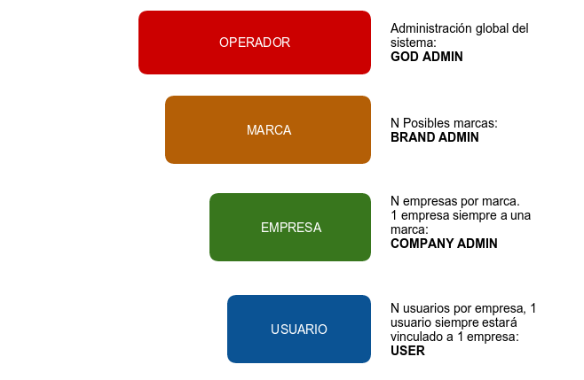

Roles de la plataforma¶
Ivozprovider es una solución orientada a operador con múltiples niveles de usuarios.
La siguiente imagen ilustra los niveles que existen, así como la relación entre ellos:
En esta sección se explicará cada uno de estos roles, describiendo sus responsabilidades y sus funciones más importantes.
Rol de administrador global¶
El rol de administrador global (operador en la imagen) lo desempeña habitualmente instalador de IvozProvider.
Tiene visibilidad total de todos los aspectos de la plataforma y suele ser el encargado del mantenimiento de la misma.
Su función más importante es crear Marcas y hacer todo lo necesario para que dispongan de la autonomía necesaria para usar la plataforma:
Configurar sus accesos web.
Configurar el aspecto de su portal de administración de marca: tema, colores, etc.
Aparte de esta función principal, su visibilidad global y acceso total le hacen responsable de:
Monitorizar la plataforma para que esté siempre UP & RUNNING.
Analizar los logs de la plataforma en busca de posibles errores.
Afinar los mecanismos de seguridad para evitar ataques externos.
Obtener estadísticas globales de calidad de llamada.
Ir aumentando los recursos de la plataforma a medida que se vaya necesitando:
Aumentando los recursos de la instalación standalone.
Migrando, llegado el momento, a una instalación distribuida con múltiples AS-es, media relays, etc.
En resumen, es el único rol que no tiene límites dentro de la plataforma, de ahí la denominación God que se utilizará en múltiples lugares de esta documentación.
Importante
Este rol se encarga de mantener la plataforma, adaptándola a las necesidades de cada momento. Su rol no tiene ningún tipo de límite y es el que da acceso a los n operadores de marca.
Rol de operador de marca¶
El operador de marca utiliza la plataforma con un acceso y una visibilidad menor que el rol anterior. En concreto, el operador global le facilita una URL y unas credenciales y ese portal web de operador de Marca es su único interfaz con IvozProvider.
No obstante, este portal le permite desempeñar su función más importante,que es crear empresas y configurar todo lo necesario para que éstas desempeñen su función.
Dado que el operador de marca es el encargado de facturar a sus empresas y de hacer que sus llamadas salgan al exterior, también tiene que gestionar:
Contratos de Peering con otros operadores IP para conectar con la PSTN.
Incluir en los datos de la empresa toda información necesaria para las facturas.
Planes de Precio que ofertarán a sus empresas, qué determinarán cuánto pagan por cada tipo de llamada.
Configurar por dónde sale cada tipo de llamada de cada empresa, en función del destino.
Generar las facturas en cada período de facturación y emitarlas al cliente.
Como se puede ver, las tareas del operador de marca poco tienen que ver con las del operador global, pero son vitales para que los usuarios finales puedan hacer uso de las funcionalidades de IvozProvider.
Importante
En resumen, los operadores de marca dan acceso a los administradores de las empresas a las que den servicio y configuran la plataforma para poder enrutar, tarificar y facturar sus llamadas.
Rol de administrador de empresa¶
El administrador de empresa dispone del acceso web que le proveé el administrador de marca.
Desde su perspectiva, dispone de una centralita virtual en la nube que tiene que configurar para que la utilicen sus usuarios.
Para ello, tendrá que:
Dar de alta terminales, extensiones y usuarios.
Configurar el tratamiento de los DDIs de entrada, para que se comporten como quieran:
Directos a usuario
- IVRs
Grupos de Salto
- Faxes
Dar acceso a los usuarios finales a su portal web, para que configuren a su gusto aspectos como:
Desvíos
No molestar
Llamada en espera
Importante
En resumen, los administradores de empresa son los responsables de configurar su sistema de telefonía a su gusto y de utilizar todas las funcionalidades que proveé IvozProvider.
Rol de usuario final¶
El usuario final dispondrá de dos credenciales, ambas provistas por su administrador de empresa:
Credenciales de acceso web al portal de usuario.
Credenciales SIP para registrar su terminal (o terminales) contra IvozProvider.
Desde el portal de usuario podrán ver sus registros de llamadas y configurar aspectos como:
Desvíos
No molestar
Llamada en espera
Por otra parte, las credenciales SIP le permitirán configurar su terminal (o terminales) para poder emitir y recibir llamadas.
Nota
Unas mismas credenciales se pueden utilizar desde múltiples dispositivos,dando lugar a lo que se conoce como parallel-forking: si llaman al usuario, sonarán todos sus dispositivos activos y podrá contestar la llamada desde cualquiera de ellos.
Importante
Los usuarios son los que utilizan y disfrutan todas las funcionalidades de IvozProvider.